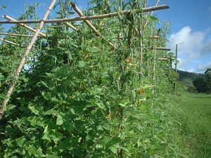
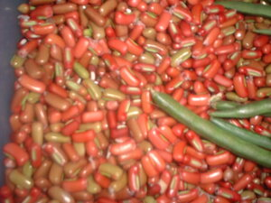

tewuri  
/tɔwudi/
n.
beans
Wrd.Gloss: plant
Ka tewuri iyan ka pinamula ne egpekeiling te kalatan ne malalab ka behas wey egpangahapkap iling te mantungè. Dereisek dè ka dewun iling te patatas wey malapung.
Derakel se behas te pinamula ku ne tewuri diyè te baley.
The plant I planted at home bear healthy fruits.
Mananam ne egsukalan ka tewuri ne egkalutù e.
Cooked beans is delicious when mixed with sugar.
Duen pad serè ta ne tewuri su meupiya ne igkeen seini.
Do we have more beans because I want to eat more.
Eng. plant variety; bean variety
Online dict status: -
Usage level: F
Updated by: TME,NJK
Last updated: 13/Oct/2009
This page last updated: 28-Dec-2019
Copyright © 2009-2014, Matigsalug Language Christian Association, Inc